ПРАВОВЫЕ АСПЕКТЫ ИСПОЛЬЗОВАНИЯ БВС В РФ
- Мочалов Александр
- Валерьевич
- al.mochalov93@gmail.com

Нормативные документы
- ФАВТ- Федеральное Агентство Воздушного Транспорта
- "Воздушный кодекс Российской Федерации" от 19.03.1997 N 60-ФЗ (ред. от 08.06.2020)
- (http://www.consultant.ru/document/cons_doc_LAW_13744/)
- Закон РФ "О государственной тайне" от 21.07.1993 N 5485-1 (последняя редакция)
- (http://www.consultant.ru/document/cons_doc_LAW_2481/)
- Постановление Правительства от 03 февраля 2020 № 74 “О внесении изменений в Федеральные правила использования воздушного пространства Российской Федерации”.
- (http://publication.pravo.gov.ru/Document/View/0001202002040016?roistat_visit=1902078)
- Постановление Правительства РФ от 11.03.2010 N 138 (ред. от 03.02.2020) "Об утверждении Федеральных правил использования воздушного пространства Российской Федерации»
- (http://www.consultant.ru/document/cons_doc_LAW_98957/eebf3dcde3e947edfbad172f8c7d1e4500603eaf/
Терминология
- БАС
- БПЛА
- БАК
- БЛА
- БВС
- Пункт 2 ПП исключает понятие «беспилотного летательного аппарата». Вместо этого летные суда будут называться единым именем «беспилотное воздушное судно» (БВС).


Учет БВС в Росавицации
- Масса
- до 0,25 кг
- Масса
- от 0,25 до 30 кг
- Масса
- более 30 кг
- Не подлежит постановке на учет
- Обязательно получение сертификата летной годности БВС
- Обязательная регистрация БВС
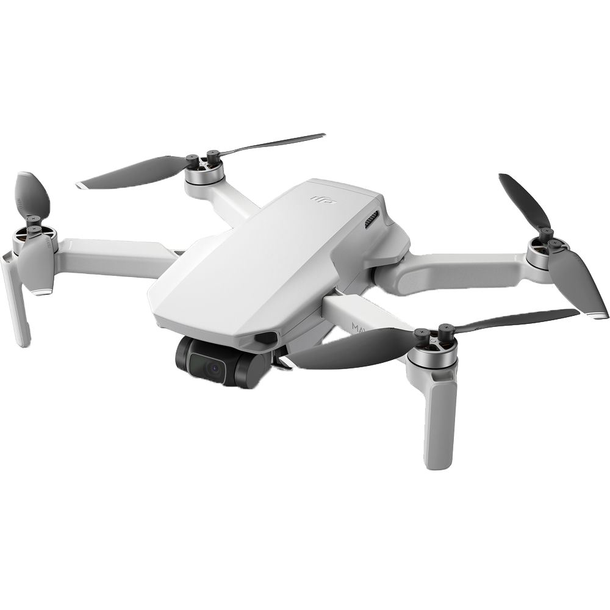
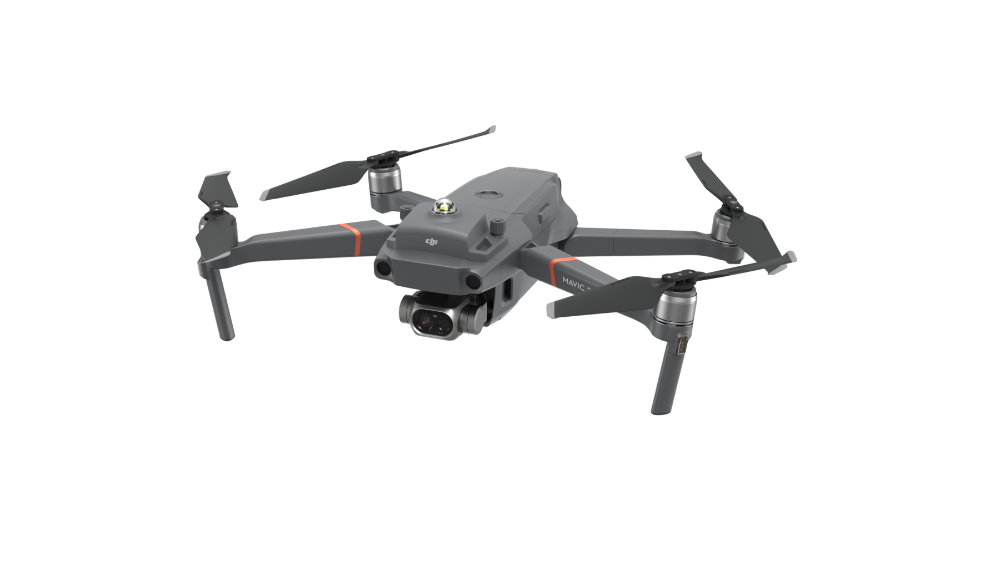
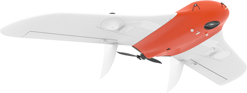
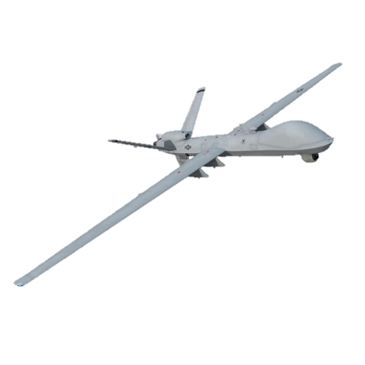
Учет БВС в Росавицации
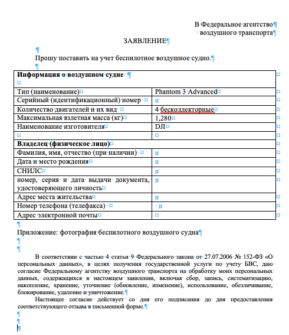
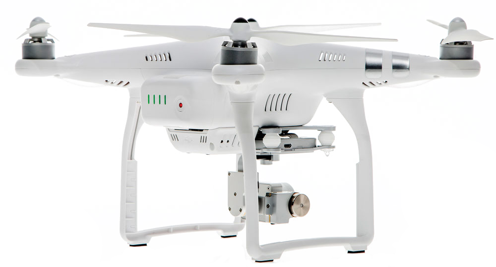
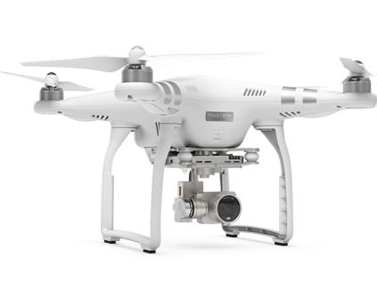
Учет БВС в Росавицации
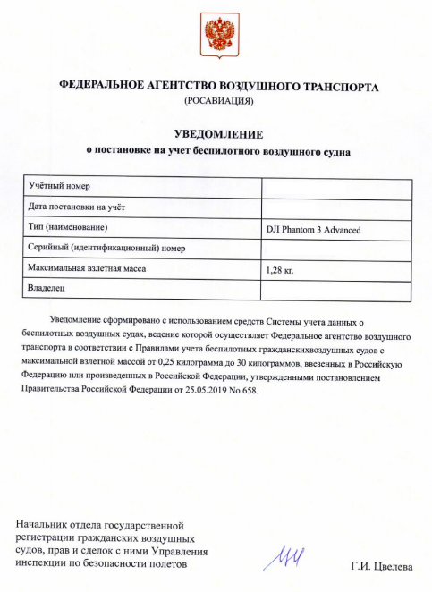
Разрешение на АФС
- Разрешение Генерального Штаба Вооруженных Сил РФ (ГШ ВС РФ)
- Разрешение Штаба Округа (ШО)
- Разрешение Управления Федеральной Службы Безопасности РФ (ФСБ РФ) региона
- 3.1. Уведомление о планируемых полётах в Пограничное Управление ФСБ РФ региона (ПУ ФСБ РФ)
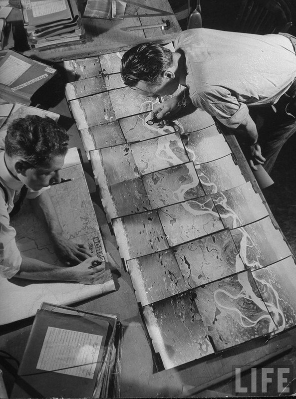
Разрешение на АФС
- Разрешение Генерального Штаба Вооруженных Сил РФ (ГШ ВС РФ)
- Для получения разрешения на АФС от ГШ ВС РФ направляется письмо с приложенными документами:
- 1. Лицензия ФСБ на работу с гостайной 2. Лицензия на геодезическую деятельность 3. Лицензия на картографическую деятельность 4. Схема выполнения аэрофотосъемочных работ
- Срок ответа от 7 дней
- ГШ ВС РФ
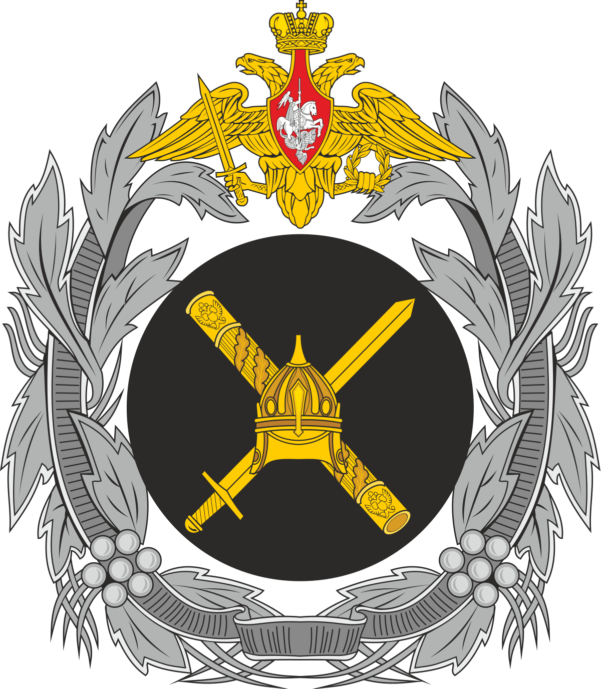
Разрешение на АФС
- Разрешение Штаба Округа (ШО)
- Для получения разрешения от ШО направляется письмо с приложенным разрешением от ГШ ВС РФ.
- Срок ответа до 30 дней.
- Западный военный округ
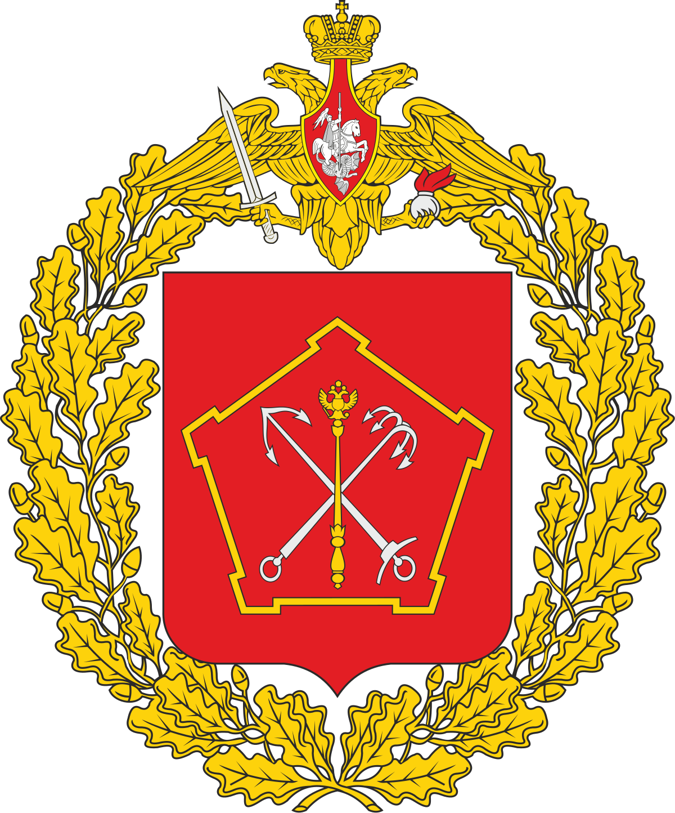
Разрешение на АФС
Разрешение Управления Федеральной Службы Безопасности РФ (ФСБ РФ) региона и Уведомление о планируемых полётах в Пограничное Управление ФСБ РФ региона (ПУ ФСБ РФ)
Для получения разрешения от ФСБ РФ направляется письмо с приложенным разрешением от ГШ ВС РФ и ШО.
Срок ответа до 30 дней.
Требуется в случае выполнения АФС в приграничной зоне (25км до границы). В ПУ ФСБ РФ направляется уведомительное письмо о планируемых полётах с приложенным разрешением от ФСБ РФ. Срок ответа до 30 дней.
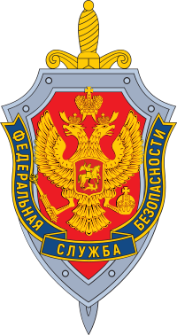
Рассекречивание АФС
Контрольный просмотр выполняется региональным Управлением ФСБ РФ, после которого выдается заключение о возможности использования материалов и предписание о распространении грифа секретности на объекты съемки.
Срок ответа от 14 дней.
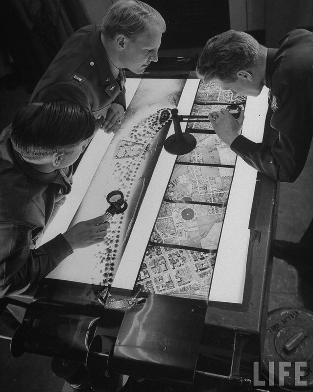
Разрешение на ИВП
- КАСАЕТСЯ ВСЕХ БВС МАССОЙ ДО 30 КГ
- !!!!!!!!!!
Разрешение на ИВП
- Полеты без уведомления зональных центров
- БВС от 0,25 до 30 килограмм должен быть зарегистрирован в Росавиации;
- Полет происходит в светлое время суток, в пределах прямой видимости оператора и на высоте не более 150 метров;
- Полет происходит вне диспетчерских зон аэродромов, запретных и специальных зон, зон ограничения полетов и посадочных площадок (актуальные зоны можно отслеживать: https://fpln.ru/;
- Полет происходит вне массовых мероприятий.
- ВАЖНО! При полете над населенным пунктом по-прежнему нужно получать разрешение от органов местного самоуправления.
Разрешение на ИВП
- Если условия не выполняются
- Местный режим
- Временный режим
- Временный режим устанавливается главным центром Единой системы для обеспечения следующих видов деятельности-выполнение полётов беспилотных летательных аппаратов в воздушном пространстве классов A и C
- Местный режим устанавливается зональным центром Единой системы в нижнем воздушном пространстве для обеспечения следующих видов деятельности-выполнение полётов беспилотным летательным аппаратом в воздушном пространстве классов C и G.
- Местный режим на воздушных трассах и местных воздушных линиях, открытых для международных полётов, а также в районах аэродромов, открытых для выполнения международных полётов, не устанавливается.
Разрешение на ИВП
- ВАЖНО! Если полеты выполняются в черте города, то обязательно согласование с органом местного самоуправления
- не позднее 5-ти дней временный!
- не позднее 3-х дней местный!
- не позднее чем за 1 день!
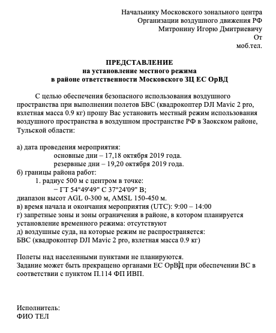
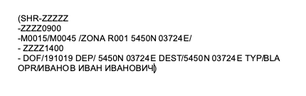
Разрешение на ИВП
Местный режим
МДП/РПИ (местный диспетчерский пункт/район полетной информации). Все свои действия подтверждать по телефону!
ВАЖНО! Представление на установление местного режима подается не позднее чем за 3 дня до даты полетов
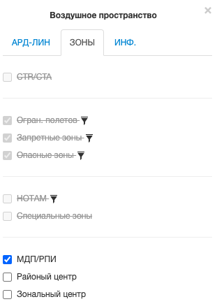
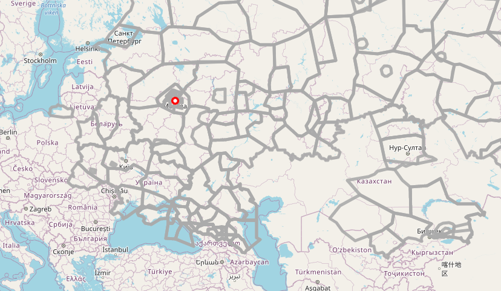
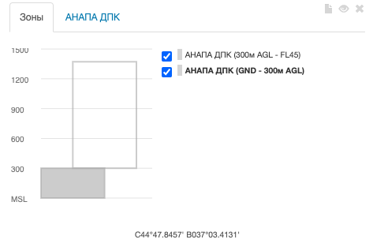
Разрешение на ИВП
- Временный режим
- Обязательно согласование со всей структурой ЕС ОрВД. Все свои действия подтверждать по телефону!
- МДП/РПИ
- Районный центр
- ВАЖНО! Представление на установление местного режима подается не позднее чем за 5 дней до даты полетов
- Зональный центр
- Главный Центр ЕС ОрВД
Разрешение на ИВП
После рассмотрения представления на установление режима выдается его номер. МР № или ВР №
Разрешение на ИВП
- План полета
- ВАЖНО! Представление на установление местного режима подается не позднее чем за 1 день до даты полетов и отправляется в орган, в чьей зоне ответственности выполняется полет
- (SHR -ZZZZZ-Тип сообщения и бортовой номер
- ZZZZ0900-Аэродром и время вылета UTC
- М0015/М0045 /ZONA R001 5450N 03724E/ -Маршрут
- ZZZZ1400- -Аэродром и время посадки UTC
- DOF/191019 DEP/ 5450N 03724E DEST/5450N 03724E TYP/BLA OPR/ИВАНОВ ИВАН ИВАНОВИЧ)-Дополнительная информация о полете
Полеты
За 1 час до вылета звонок в диспетчерскую органа в чьей зоне ответственности выполняется полет
После выполнения полетов также необходимо сообщить в диспетчерскую об окончании работ
Если в рамках установленного режима полеты больше не планируются необходимо снять решим в органе, который его согласовал
ВАЖНО! Незамедлительно сообщать обо всех происшествиях и изменениях в рамках работы в установленном режиме
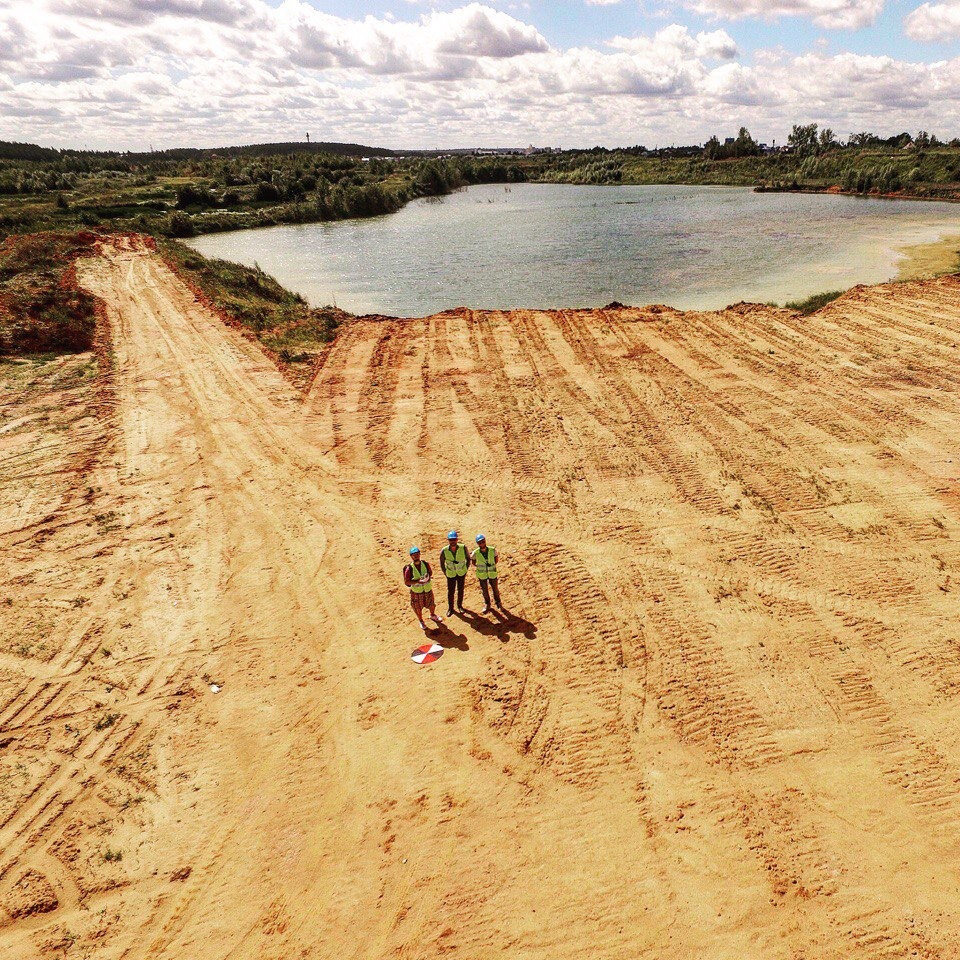
Штрафы
За нелегальный запуск беспилотного воздушного судна Кодекс об административных правонарушениях (ст. 11.4) предусматривает штрафы: для физических лиц они составляют от 20 до 50 тыс. рублей, а для юридических — от 250 до 300 тыс. рублей.
За причинение в результате несанкционированного полета БВС по неосторожности легкого либо средней тяжести вреда здоровью предусмотрен штраф: для физических лиц до 2,5 тыс. рублей, для юридических – до 100 тыс. рублей.
Где полеты запрещены
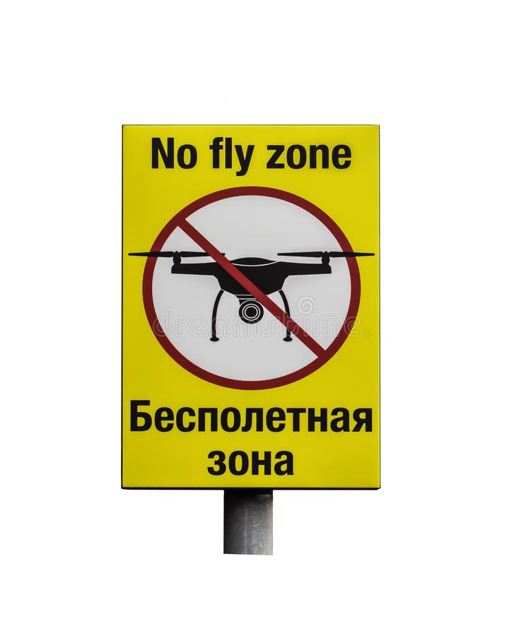